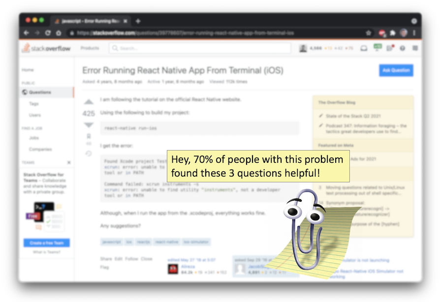
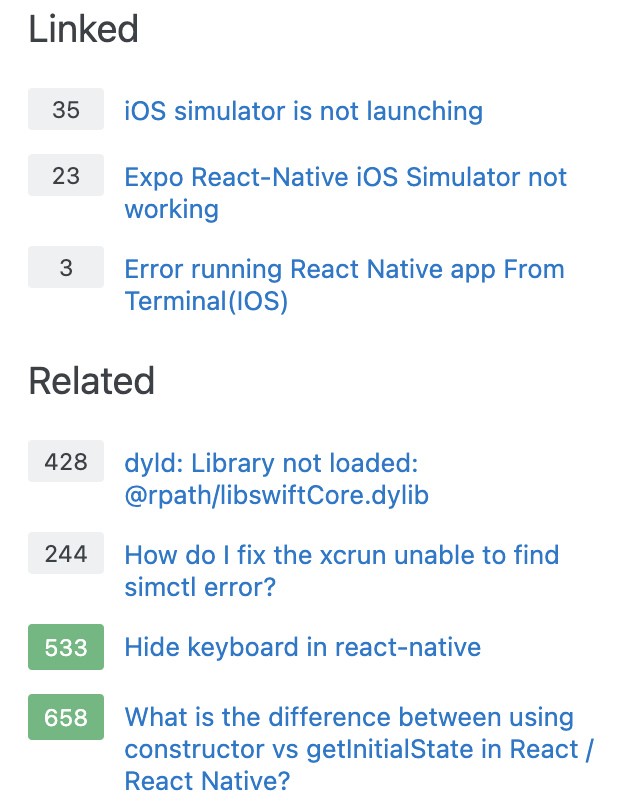

Associate Teaching Professor
Carnegie Mellon University
I was recently on the Stack Overflow podcast discussing our research on Information Foraging Theory (see my blog post). I had a lot of fun chatting with them, and it got me thinking about how I'd apply some of our findings to the Stack Overflow website. I talked briefly about this at the end of the podcast, so I'll expand on that idea here.
Recently, I was installing React Native on my new work laptop. This is usually straightforward, just run a few terminal commands. But I got an error. Then another. And another.
My process went like this:
This happened over and over. I still have no idea what was the root cause of all the issues.
But it got me thinking... surely I am not the only person that had this sequence of problems. And Stack Overflow already has data on what questions people view and when they view it.
What if Stack Overflow could help you get to the next relevant question and answer?
I want Stack Overflow to recommend what problems I'll have in the future to reduce the ping ponging I do between my terminal and browser, or to eliminate it entirely by helping me see the big picture problem.
The sidebar currently provides suggestions for similar questions, but they often seem like duplicates or too unrelated.
Let's go a step further from just individual recommendations though: A cluster of sequential questions could be generated automatically (or crowdsourced!) into playlists of questions. They certainly have the user data from me viewing a different question every 5 minutes that is on a similar topic before I navigate away.
Now tutorials and documentation could embed/link to these playlists which can naturally evolve and improve over time, and this keeps with the wiki-style that Stack Overflow wanted from Q/A.
This applies to a lot more domains than just installing software or following a tutorial. My Stack Overflow usage almost always involves this back-and-forth behavior and requires multiple answers.
Stack Overflow is great for solving specific problems, but imagine how much more it could do! Don't even get me started on how snippets from Stack Overflow answers could be integrated into code editors.
If you want to read more about our research on developer tools, check out: